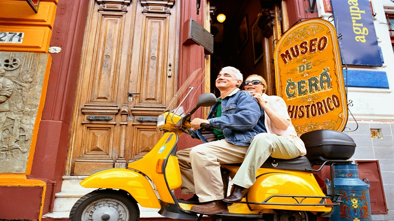

Región Centro Pampeana
El centro de nuestro país tiene ese encanto que nadie se debería perder. Las sierras de Córdoba, el
delta
del Paraná y la magnífica Buenos Aires son algunos de los muchos atractivos que tiene para ofrecer.
¡A por más aventuras!

- Las tardecitas de Buenos Aires tiene ese qué sé yo, ¿viste?
- Paquete por la ciudad de Buenos Aires: 3 días
- Traslados de entrada y salida
- 3 noches de alojamiento, con desayuno.
- Excursiones: City tour + Delta del Tigre + Show de Tango
- Guía Español e Inglés
- Precio aproximado: $26.000
Experiencias de viajeros que nos conocen y recomiendan:

Robert: My first time in Buenos Aires was very short, I did a business trip
with my company. This time I came with my wife and I wanted to show her this amazing city. I
contacted this agency because I wanted something specialized for my passion for history and
meat. They did an incredible job and I highly recommend it (of course they speak english
very well). The best trip ever!